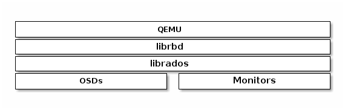

Notice
This document is for a development version of Ceph.
QEMU and Block Devices
The most frequent Ceph Block Device use case involves providing block device images to virtual machines. For example, a user may create a “golden” image with an OS and any relevant software in an ideal configuration. Then the user takes a snapshot of the image. Finally the user clones the snapshot (potentially many times). See Snapshots for details. The ability to make copy-on-write clones of a snapshot means that Ceph can provision block device images to virtual machines quickly, because the client doesn’t have to download the entire image each time it spins up a new virtual machine.

Ceph Block Devices attach to QEMU virtual machines. For details on QEMU, see QEMU Open Source Processor Emulator. For QEMU documentation, see QEMU Manual. For installation details, see Installation.
Important
To use Ceph Block Devices with QEMU, you must have access to a running Ceph cluster.
Usage
The QEMU command line expects you to specify the Ceph pool and image name. You may also specify a snapshot.
QEMU will assume that Ceph configuration resides in the default
location (e.g., /etc/ceph/$cluster.conf) and that you are executing
commands as the default client.admin user unless you expressly specify
another Ceph configuration file path or another user. When specifying a user,
QEMU uses the ID rather than the full TYPE:ID. See User Management -
User for details. Do not prepend the client type (i.e., client.) to the
beginning of the user ID, or you will receive an authentication error. You
should have the key for the admin user or the key of another user you
specify with the :id={user} option in a keyring file stored in default path
(i.e., /etc/ceph or the local directory with appropriate file ownership and
permissions. Usage takes the following form:
qemu-img {command} [options] rbd:{pool-name}/{image-name}[@snapshot-name][:option1=value1][:option2=value2...]
For example, specifying the id and conf options might look like the following:
qemu-img {command} [options] rbd:glance-pool/maipo:id=glance:conf=/etc/ceph/ceph.conf
Tip
Configuration values containing :, @, or = can be escaped with a
leading \ character.
Creating Images with QEMU
You can create a block device image from QEMU. You must specify rbd, the
pool name, and the name of the image you wish to create. You must also specify
the size of the image.
qemu-img create -f raw rbd:{pool-name}/{image-name} {size}
For example:
qemu-img create -f raw rbd:data/foo 10G
Important
The raw data format is really the only sensible
format option to use with RBD. Technically, you could use other
QEMU-supported formats (such as qcow2 or vmdk), but doing
so would add additional overhead, and would also render the volume
unsafe for virtual machine live migration when caching (see below)
is enabled.
Resizing Images with QEMU
You can resize a block device image from QEMU. You must specify rbd,
the pool name, and the name of the image you wish to resize. You must also
specify the size of the image.
qemu-img resize rbd:{pool-name}/{image-name} {size}
For example:
qemu-img resize rbd:data/foo 10G
Retrieving Image Info with QEMU
You can retrieve block device image information from QEMU. You must
specify rbd, the pool name, and the name of the image.
qemu-img info rbd:{pool-name}/{image-name}
For example:
qemu-img info rbd:data/foo
Running QEMU with RBD
QEMU can pass a block device from the host on to a guest, but since
QEMU 0.15, there’s no need to map an image as a block device on
the host. Instead, QEMU attaches an image as a virtual block
device directly via librbd. This strategy increases performance
by avoiding context switches and taking advantage of RBD caching.
You can use qemu-img to convert existing virtual machine images to Ceph
block device images. For example, if you have a qcow2 image, you could run:
qemu-img convert -f qcow2 -O raw debian_squeeze.qcow2 rbd:data/squeeze
To run a virtual machine booting from that image, you could run:
qemu -m 1024 -drive format=raw,file=rbd:data/squeeze
RBD caching can significantly improve performance.
Since QEMU 1.2, QEMU’s cache options control librbd caching:
qemu -m 1024 -drive format=rbd,file=rbd:data/squeeze,cache=writeback
If you have an older version of QEMU, you can set the librbd cache
configuration (like any Ceph configuration option) as part of the
‘file’ parameter:
qemu -m 1024 -drive format=raw,file=rbd:data/squeeze:rbd_cache=true,cache=writeback
Important
If you set rbd_cache=true, you must set cache=writeback or risk data loss. Without cache=writeback, QEMU will not send flush requests to librbd. If QEMU exits uncleanly in this configuration, file systems on top of rbd can be corrupted.
Enabling Discard/TRIM
Since Ceph version 0.46 and QEMU version 1.1, Ceph Block Devices support the
discard operation. This means that a guest can send TRIM requests to let a Ceph
block device reclaim unused space. This can be enabled in the guest by mounting
ext4 or XFS with the discard option.
For this to be available to the guest, it must be explicitly enabled
for the block device. To do this, you must specify a
discard_granularity associated with the drive:
qemu -m 1024 -drive format=raw,file=rbd:data/squeeze,id=drive1,if=none \
-device driver=ide-hd,drive=drive1,discard_granularity=512
Note that this uses the IDE driver. The virtio driver supports discard since Linux kernel version 5.0.
If using libvirt, edit your libvirt domain’s configuration file using virsh
edit to include the xmlns:qemu value. Then, add a qemu:commandline
block as a child of that domain. The following example shows how to set two
devices with qemu id= to different discard_granularity values.
<domain type='kvm' xmlns:qemu='http://libvirt.org/schemas/domain/qemu/1.0'>
<qemu:commandline>
<qemu:arg value='-set'/>
<qemu:arg value='block.scsi0-0-0.discard_granularity=4096'/>
<qemu:arg value='-set'/>
<qemu:arg value='block.scsi0-0-1.discard_granularity=65536'/>
</qemu:commandline>
</domain>
QEMU Cache Options
QEMU’s cache options correspond to the following Ceph RBD Cache settings.
Writeback:
rbd_cache = true
Writethrough:
rbd_cache = true
rbd_cache_max_dirty = 0
None:
rbd_cache = false
QEMU’s cache settings override Ceph’s cache settings (including settings that are explicitly set in the Ceph configuration file).
Note
Prior to QEMU v2.4.0, if you explicitly set RBD Cache settings in the Ceph configuration file, your Ceph settings override the QEMU cache settings.
Brought to you by the Ceph Foundation
The Ceph Documentation is a community resource funded and hosted by the non-profit Ceph Foundation. If you would like to support this and our other efforts, please consider joining now.